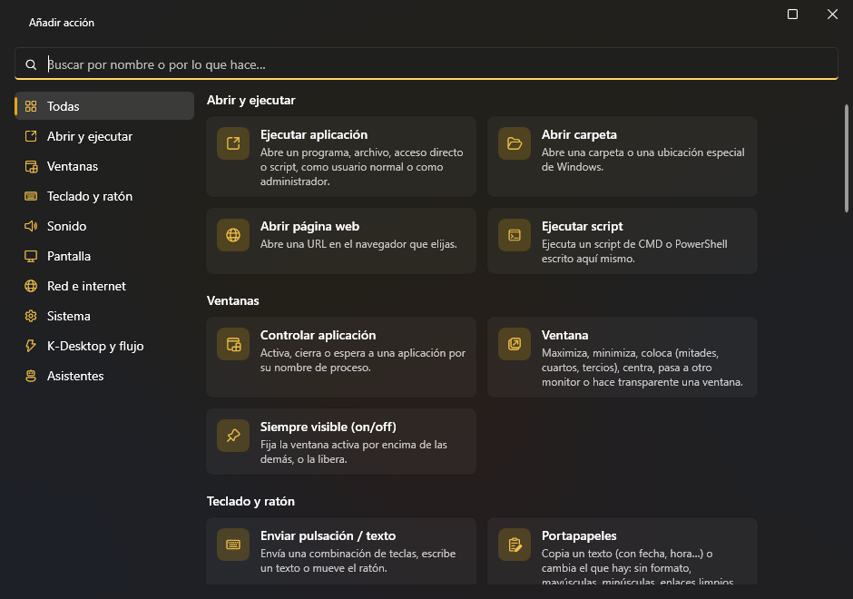
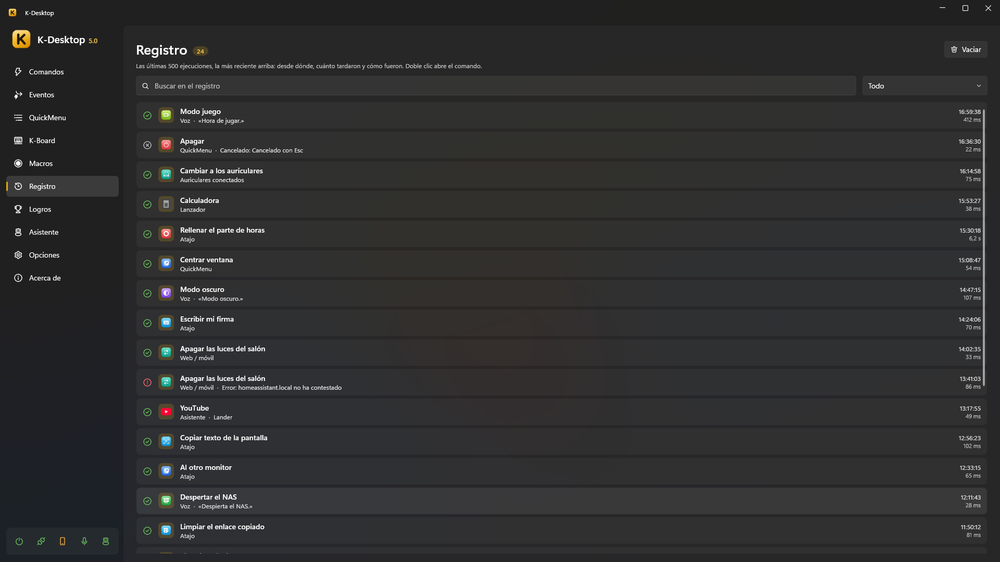

Comandos
Un comando es una lista de acciones con un nombre. Se lanza con un atajo, desde un QuickMenu, el lanzador, la voz, el móvil, la red, un evento, otro comando o un asistente.

Atajos
Un atajo es cualquier combinación de teclas, botones del ratón y la rueda: CTRL + ALT + O, F13, Mouse 5,
Mouse 4 + Mouse 1, CTRL + Wheel Up… Para grabarlo, haz clic en la casilla del atajo y púlsalo. Un comando puede tener
varios.
- Solo para un programa: limita el comando a algunos programas (por el nombre de su proceso). Si el mismo atajo existe en general y para un programa, dentro de ese programa gana el específico y en todos los demás el general.
- Desactivar en: en Opciones → Desactivar en pones los programas (juegos, escritorios remotos…) donde los atajos de K-Desktop no hacen nada. La acción Desactivar en la app actual lo cambia para el programa que está delante.
- K-Desktop avisa cuando un atajo ya lo usa otro comando, el propio K-Desktop o un asistente.
Esquinas y gestos del ratón
Junto a Añadir atajo hay dos botones más:
- Esquina de la pantalla: eliges una de las cuatro (↖ ↗ ↙ ↘) y el comando se ejecuta al dejar el ratón en ella un momento. Vale cualquier esquina donde el cursor se queda parado, también la que deja suelta una pantalla más alta o desplazada; donde se tocan dos pantallas no hay esquina. Nunca salta con un botón pulsado ni a pantalla completa.
- Gesto del ratón: un dibujo de un solo trazo (←, →, ↑, ↓, C, L, N, S, U, V, Λ, W, M, Z o un círculo) que haces manteniendo pulsado el botón derecho (o el central, Mouse 4 o Mouse 5). Si haces clic sin moverte, o lo mantienes quieto, el botón funciona como siempre; con Esc mientras dibujas no pasa nada. En la ventana del gesto hay un recuadro para probar los dibujos con el botón izquierdo, y Dibujar el tuyo: le das un nombre y lo dibujas tres veces.
La espera en la esquina, el botón de los gestos, ver el trazo y los programas sin gestos están en Opciones → Ratón.
Acciones
Cada comando tiene una lista de acciones que se ejecutan en orden: abrir un programa, colocar una ventana, enviar teclas, cambiar el volumen, esperar, ejecutar otro comando… Ver la lista completa de acciones.

- Cada acción se puede apagar sin borrarla, y su orden se cambia arrastrando.
- Ejecutar en el editor prueba el comando al momento.
- Un comando que tarda (espera, macro, script que se espera…) lleva un ▶ en la lista mientras está en marcha, y junto al número de comandos sale cuántos hay en marcha: haz clic para verlos o detenerlos todos. Ejecutar pasa a Detener mientras ese comando sigue en marcha.
- No puede haber dos comandos con el mismo nombre (tampoco dos eventos, QuickMenus, macros o perfiles de K-Board): si escribes uno que ya existe, se queda el de antes.
- Una acción que abre algo elige si va como administrador o como usuario normal.
Si… (condiciones)
La acción Si… comprueba algo y, si no se cumple, para el comando, se salta las acciones siguientes o ejecuta otro comando en su lugar (elegido en la lista; usa las mismas variables). Puede mirar:
| Condición | Ejemplo |
|---|---|
| Un programa está abierto / está delante | «Si Steam está abierto» |
| Una hora y unos días | «Si es de lunes a viernes de 9:00 a 18:00» |
| Un dispositivo está conectado | «Si el mando de Xbox está conectado» |
| El sonido sale por un dispositivo / algo está sonando | «Si el sonido sale por los auriculares» |
| Una red | «Si está conectado a WiFiCasa», «Si no hay red» |
| Batería o corriente | «Si funciona con batería» |
| Un equipo responde | «Si 192.168.1.10 responde» |
| Un archivo existe | «Si existe D:\copia.lock» |
| El portapapeles | «Si el portapapeles contiene «http»» |
| Uso del procesador, la gráfica o la memoria | «Si el procesador pasa del 80 %» |
| Batería por debajo de un % | «Si la batería está por debajo del 20 %» |
| Pantallas conectadas | «Si hay 2 pantallas o más» |
| Es de día | «Si es de día», «Si es de noche» (entre el amanecer y el atardecer donde estás) |
| Un texto o variable: tiene algo, contiene, es igual a, es mayor o menor que | «Si {resultado} contiene «error»», «Si {resultado} es mayor que 80» |
Todas las condiciones se pueden poner Al revés («no está», «no responde»…). Al comparar, los números se comparan como números («7» es menor que «10»; «2,5» y «2.5» son lo mismo) y el texto sin mirar mayúsculas.
Registro
Registro enseña todo lo que se ha ejecutado: qué comando, cuándo, desde dónde (atajo, menú, lanzador, voz, móvil, red, evento, asistente, servidor MCP, línea de comandos…) y si fue bien.

Organizar
- Busca por nombre, atajo o acción, y filtra la lista: todos los comandos, los que están fuera de los QuickMenus o los de un QuickMenu.
- Habilita o deshabilita un comando, ocúltalo en la lista (sigue funcionando), duplícalo o bórralo (sale también de los QuickMenus en los que estaba).
- Disponible por control remoto: si el móvil y la red lo pueden ver y ejecutar.
- Icono: automático (el de su primera acción), un icono vectorial incluido en cualquier color, una biblioteca de iconos de Windows, cualquier imagen o el favicon de una web.
- En el editor, Probar solo esta acción ejecuta una acción sola.
Exportar e importar
Un comando, una macro, un perfil de K-Board, un evento, un QuickMenu, una disposición o un texto se pueden pasar sueltos a
otro PC (o guardar aparte)
con Exportar…, desde el clic derecho de la lista. Se guarda un
archivo .kdx con todo lo que necesita: los comandos que ejecuta un evento, las macros, QuickMenus, perfiles de K-Board,
disposiciones y eventos que usa un comando, los comandos de un menú o de un perfil… y tus propios iconos, sonidos y gestos.
Para traerlo: Importar… en el clic derecho de cualquiera de esas listas (también en el hueco bajo las filas), o
suelta el .kdx en la ventana de K-Desktop. Nunca pisa nada:
- Lo que ya tienes igual se usa tal cual.
- Si algo ya lo tienes pero con cambios, pregunta: Añadir como copia (entra aparte, y también lo que lo usa, para que funcione como se exportó) o Usar lo mío.
- Un nombre que ya existe recibe un número («Saludo 2») y un atajo que ya usas se queda fuera.
Al acabar abre lo importado. Desde fuera: KDesktop.exe --import "archivo.kdx".